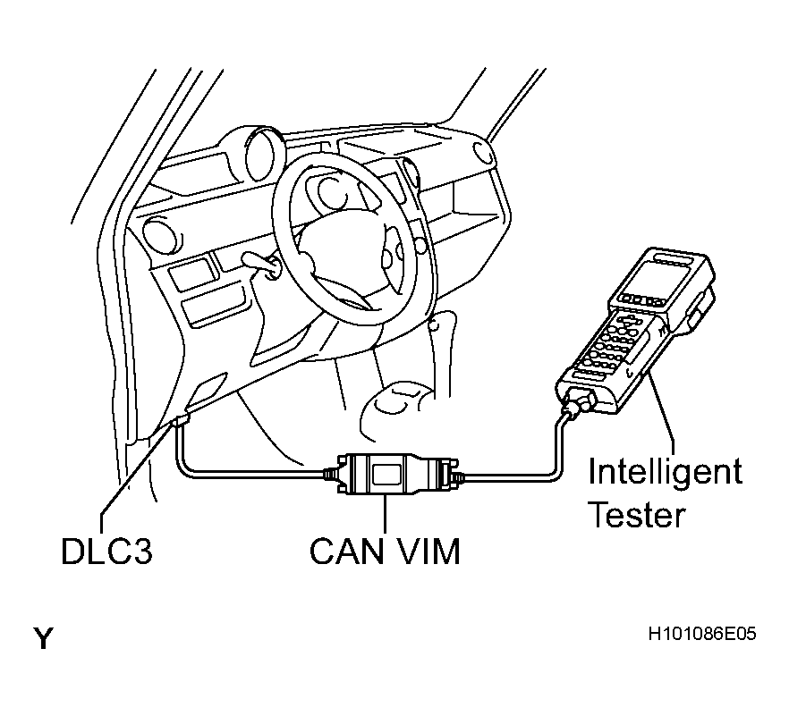

DTC Check / Clear
- CHECK DTC
- Connect the intelligent tester (with CAN VIM) to the DLC3.
- Turn the ignition switch ON.
- Read the DTCs by following the prompts on the tester screen.

Courtesy of © TOYOTA, LICENSE AGREEMENT TMS1002HINT:
Refer to the intelligent tester operator's manual for further details.
- CLEAR DTC
- Connect the intelligent tester (with CAN VIM) to the DLC3.
- Turn the ignition switch ON.
- Operate the intelligent tester (with CAN VIM) to erase the codes.
HINT:
Refer to the intelligent tester operator's manual for further details.